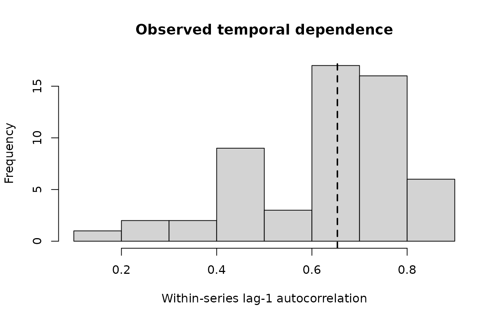
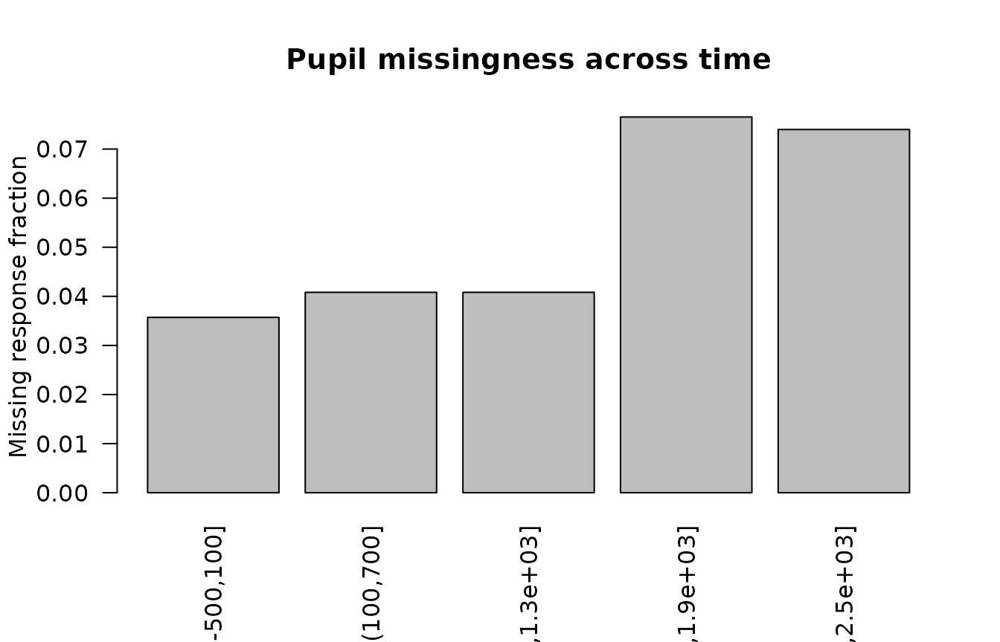

Synthetic Advanced Pupillometry Gallery
Source:vignettes/synthetic-advanced-pupillometry-gallery.Rmd
synthetic-advanced-pupillometry-gallery.Rmd
library(gp3bayes)
sim <- simulate_advanced_pupil_timecourse(
n_participants = 14,
trials_per_participant = 4,
time_points = 35,
heteroskedastic_strength = 0.7,
ar = 0.5,
outlier_fraction = 0.02,
missing_fraction = 0.06,
seed = 3080
)Temporal dependence
temporal <- audit_pupil_temporal_dependence(sim$data)
plot_pupil_temporal_dependence(temporal)
Missingness
missing <- create_pupil_missingness_spec(response = "model")
measurement <- create_pupil_measurement_model(
baseline_error = "baseline_se",
luminance_error = "luminance_se",
response_error = "pupil_se"
)
spec <- specify_advanced_pupil_timecourse_model(
sim$data,
covariates = c("baseline_pupil", "luminance"),
measurement_model = measurement,
missingness_model = missing,
autocorrelation = "none"
)
missing_audit <- audit_pupil_missingness(spec)
plot_pupil_missingness(missing_audit)
measurement_audit <- audit_pupil_measurement_model(spec)
plot_pupil_measurement_uncertainty(measurement_audit)
Binocular example
bi <- simulate_binocular_pupil_timecourse(
n_participants = 10,
trials_per_participant = 4,
time_points = 31,
seed = 3081
)
prep <- prepare_binocular_pupil_timecourse(bi$data)
audit_binocular_pupil_readiness(prep)
#> <gp3bayes_binocular_pupil_audit>
#> Status: pass
#> metric value
#> rows 1.240000e+03
#> left_available_fraction 9.741935e-01
#> right_available_fraction 9.725806e-01
#> both_available_fraction 9.661290e-01
#> mean_right_minus_left 1.433966e-02
#> sd_right_minus_left 3.038599e-02
#> pearson_correlation 9.910785e-01The gallery is intentionally backend-free so it can be built during package checks without compiling Stan. Full posterior plot examples are shown in the modelling vignettes with fitting code disabled by default.